Chapman University. Earth from Above: Env 329 - Fall 2023
Today we are introducing AρρEEARS, The Application for Extracting and Exploring Analysis Ready Samples, which is a system designed to efficiently connect users with federal databases. We are going to use it to access ECOSTRESS satellite data in near real-time.
To begin head over to https://appeears.earthdatacloud.nasa.gov/. Click the Sign In button to register for an Earthdata account or login if you already have one.
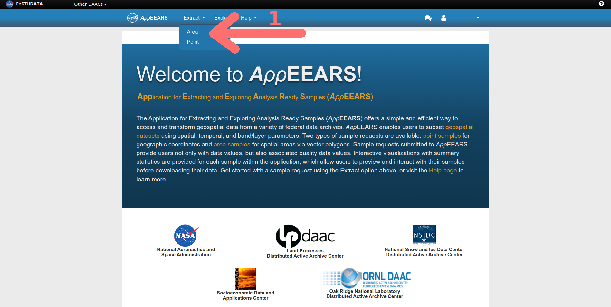
ECOSTRESS primarily measures surface temperatures, so let’s see what it reads at one of the hottest places in the world, Death Valley California. While the highest recorded ground temperature was verified at 201 degrees F on July 15, 1972, it recently had one of the hottest months on record where air temperatures reached upwards of 128 degrees F in July of 2023. Let’s use ECOSTRESS to observe the ground temperatures for those days to see how close it was to breaking the ground surface temperature record.
NOTE: ECOSTRESS launched on July 9, 2018, so as you think about potential projects, your data can not start before then.
Now we need to tell AρρEEARS what your geographic area of interest (AOI) is, in this case Death Valley National Park in California. This can be accomplished a few different ways:
Today we are going to use a shapefile describing a polygon of the park boundaries that I already drew for you in QGIS. In later tutorials you will draw your own.
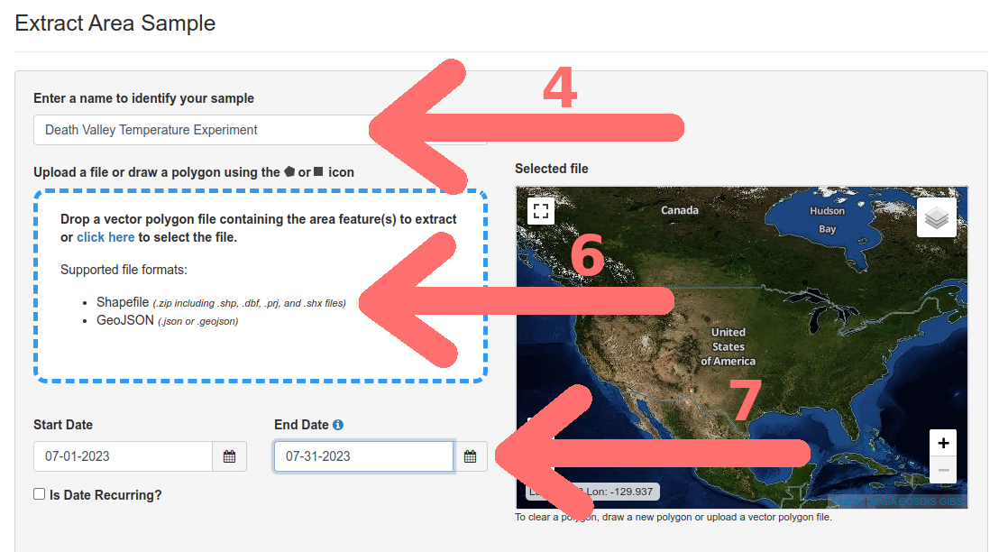
AρρEEARS is an interface that provides access to a wealth of different data products, we are primarily focusing on the ECOSTRESS satellite.
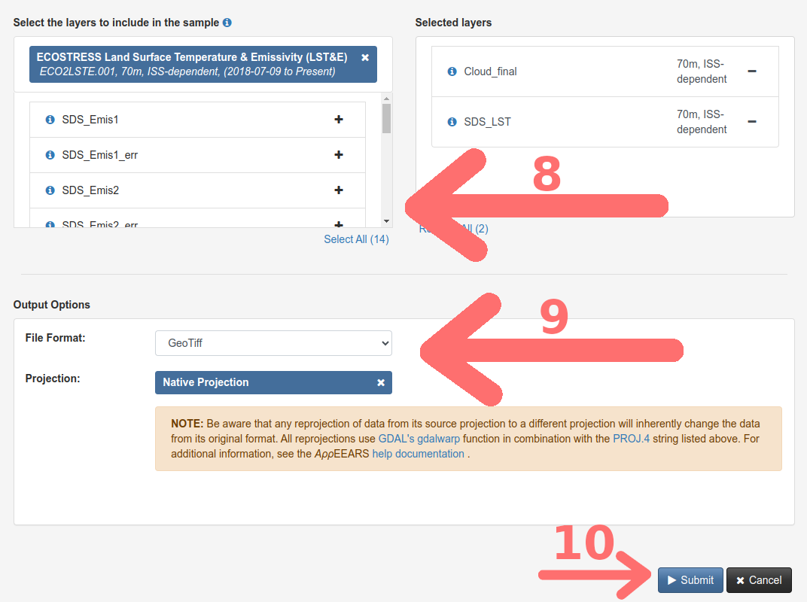
If you are curious to learn more about the ECOSTRESS Mission’s data, you can find all sorts of interesting facts here: https://lpdaac.usgs.gov/data/get-started-data/collection-overview/missions/ecostress-overview/.
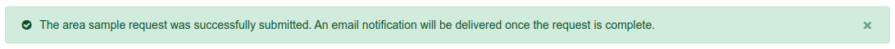

Since we need to wait for AρρEEARS to process your request, it is a good time to get you acquainted with the software we will use to run our analyses and visual our data.
Follow this link to complete the next step of the tutorial, “Getting to Know QGIS”..
After you finish it there will be a link back here to continue to work with our data request.
NOTE: While using the AρρEEARS interface you will occasionally encounter an error or the system being down for maintenance or updating. If it is the latter, there will be a banner at the top of the AρρEEARS with information about the timeline to restore service. If you encounter an error without a banner present, you can submit a support ticket at : https://lpdaac.usgs.gov/lpdaac-contact-us/.
NOTE: For these tutorials, if the AρρEEARS interface is not functioning, I have provided links at the end of each page to any files you would need to complete the lesson.
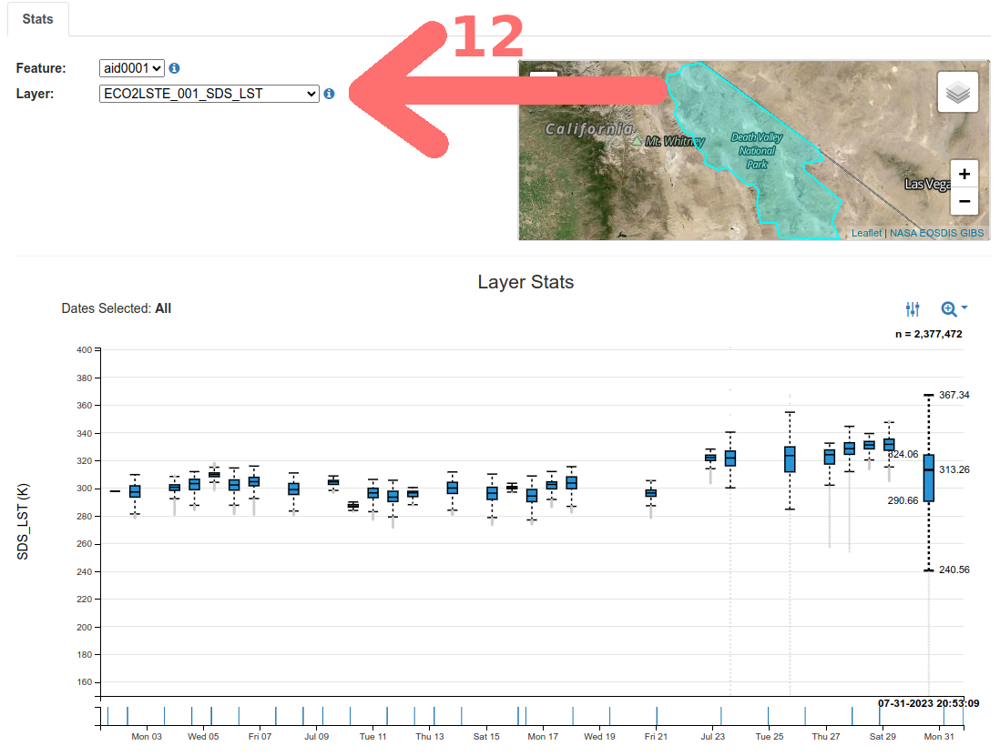
Note: ECOSTRESS makes temperature observations in Kelvin, not degrees Fahrenheit or Celsius.
You are likely noticing that the distribution of temperatures for a given pass from the satellite is quite variable. Some instances, like on Tuesday 7/11/2023, the range is tightly confined around the median, while others like Monday 7/31/2023 show considerable variance. If this was a different locale, it could mean that there is a lot of variation in surface temperatures across the geographic range we selected with the shapefile. However, in this case we know death valley is consistently hot desert, so it is more likely there is another culprit, clouds.

Satellite observations have many advantages over other types of measurements. They have continuity through space and time, but they can not accurately measure through clouds. To handle this, NASA has built cloud detection algorithms and included that data in AρρEEARS.

Output data files returned by AppEEARS have the following naming convention:
<ProductShortName>.<Version>_<LayerName>_doy<Year><JulianDate>_<AppEEARSFeatureID>.<FileFormat>
Example output file name (.tif):
ECO2LSTE.001_SDS_LST_doy2023209214149_aid0001.tif
where:
<ProductShortName> .......... ECO2LSTE
<Version> ................... 001
<LayerName> ................. SDS_LST
<Year> ...................... 2023
<JulianDate> ................ 209
<AppEEARSFeatureID> ......... aid0001
<FileFormat> ................ tif
For class we are mostly concerned with the layer name, which corresponds to what variable we are looking at (e.g. Land surface temperature = SDS_LST), and the time of the satellite pass (i.e. Year = 2023, Julian Date = 209).
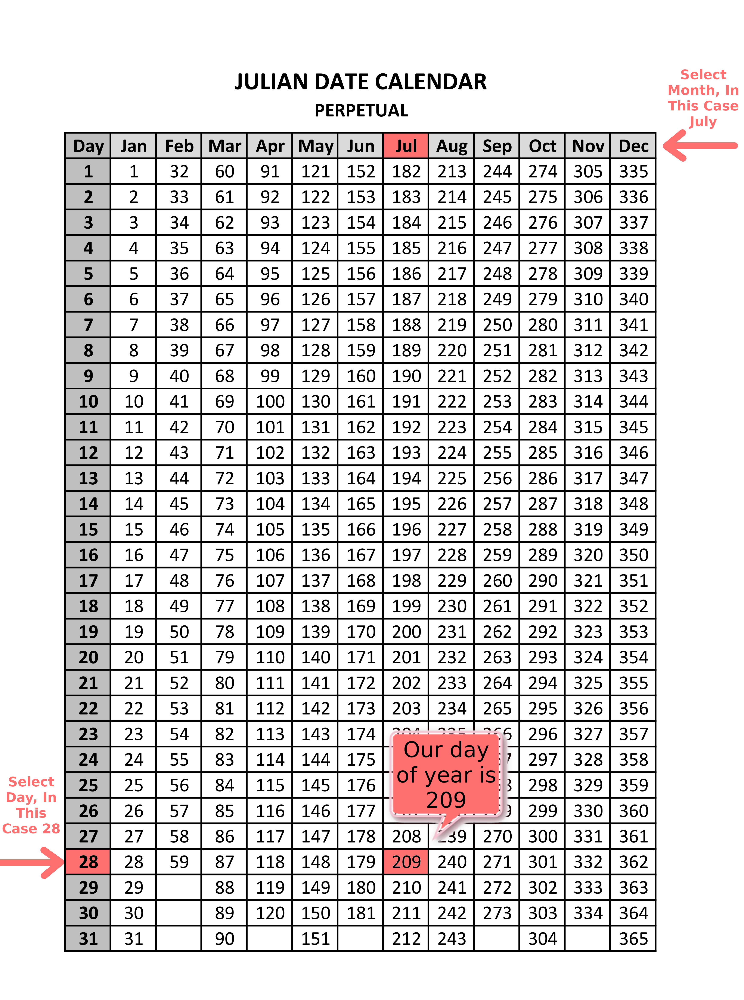
NOTE: You can access the Julian Calendar table anytime be clicking this link. Watch out for leap years!.
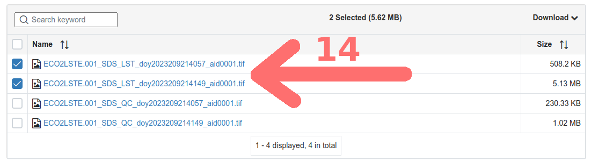
In the last tutorial we added in a simple basemap through a service included in the base QGIS installation. Today we are going to expand QGIS’s functionality by using an available plugin, HCMGIS. Plugins are external pieces of software that add useful features to QGIS.
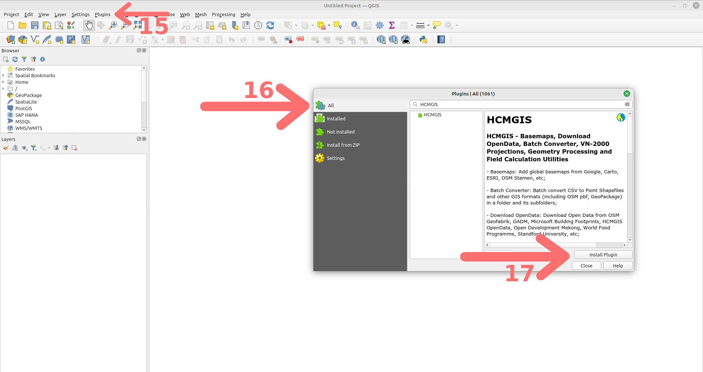
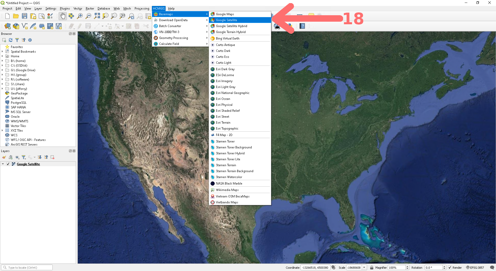
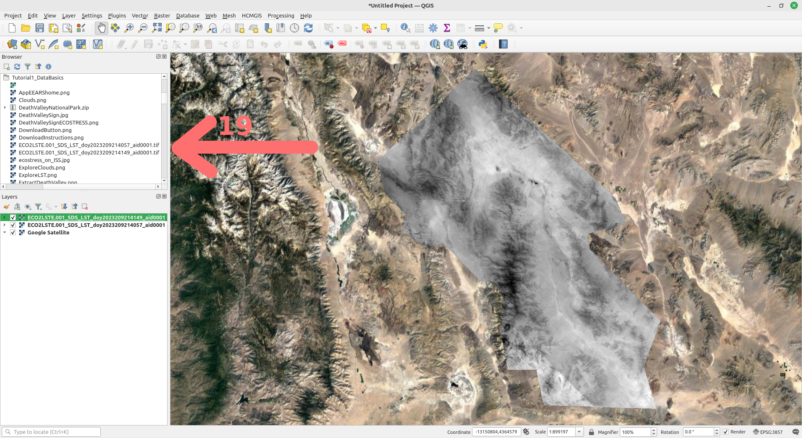
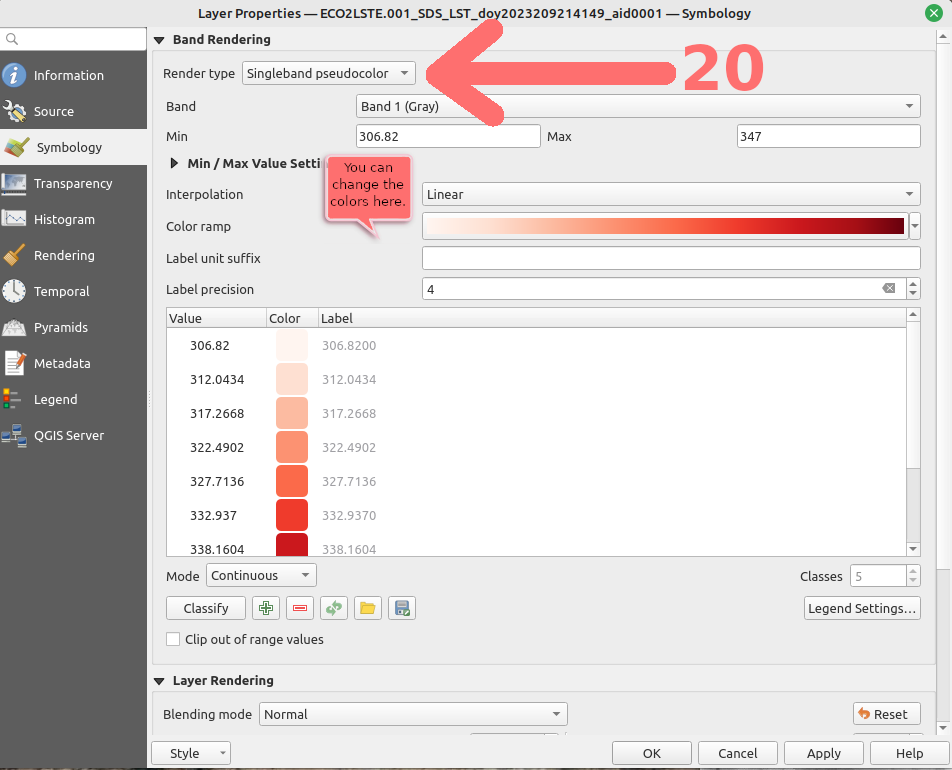
Congrats! You now have ECOSTRESS data on a map. But wait… let’s make it look just a little better before you celebrate your win. QGIS doesn’t know what kind of data this is and has defaulted to displaying the information in grayscale, which isn’t that useful to our eyes. For each land surface temperature layer, right click on the layer name in the Layers window and select Layer Properties. On the menu bar to the left select Symbology and change the Render type to Singleband pseudocolor. Since this is heat, I am going with the red color ramp. QGIS has automatically determined the minimum and maximum values from the datafiles, however we have two files so we need to make them match. Use 306.82 as the minimum and 347 as the maximum for both layers. Click apply.
Lastly add in the border from the DeathValleyNationalPark.zip shapefile. In the Browser window expand the zip file using the small arrow next to the filename. Double click on Death Valley National Park.shp to add the layer. Right click on the layer in the Layers window and change it’s symbology to outline blue.
Now we can celebrate… Your map should resemble the one below:

NOTE: There was not full data coverage for the entire park available, that is why the Northern most part of the park does not have any color overlayed. This happens sometimes due to the orbit the satellite takes.
Save you QGIS Project somewhere convenient, perhaps in the folder with all of the other files in this tutorial, by going to the Project menu bar at the top and selecting Save As…. Keep the file format as .QGZ.
Export your map. From the Project menu navigate to Import/Export and select Export Map To Image. Just as before I recommend upping the resolution to 200 dpi. You will submit this map too, so save it somewhere you can remember.
Congratulations! You have learned how to download ECOSTRESS satellite data from AρρEEARS and make a basic map in QGIS.
In case you encountered any issues with the AρρEEARS database, here are copies of the ECOSTRESS GeoTIFF files for Death Valley:
Citation: Forsythe, Goldsmith, Fisher 2023.